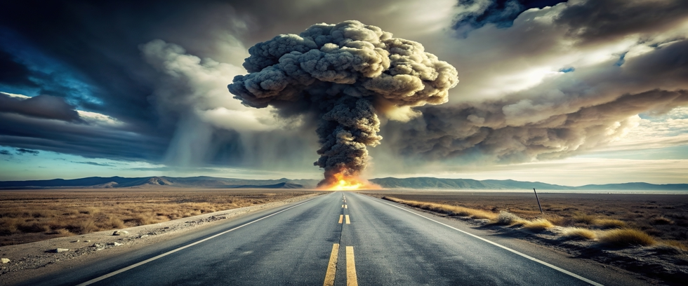

The idea that rugged individualists might survive a nuclear war persists in popular culture. Today’s movies and literature depict strong characters emerging from concrete hideouts to stoically brush away ash before rebuilding civilization from scratch.
Reality is far less forgiving. If nuclear weapons are used on a large scale, the devastation does not end with blast and radiation. What follows is a planetary catastrophe created by massive fires that pollute the stratosphere enough to reduce surface sunlight for agriculture. Mass starvation follows.
Yet there is a dirty secret that’s rarely acknowledged: A select few will survive.
Underground bunkers exist that were built to support a handful of top government and military officials during a nuclear event. Survivors would also include those with the foresight and resources to build expensive shelters hidden beneath the Earth.
Everyone else will die.
The Myth of the Backyard Bomb Shelter
The fantasy of survival for those unprepared began with the Cold War. Governments distributed pamphlets assuring citizens that sheltering under desks or in basements could protect them from atomic bombs. The public was told that survival was a matter of basic preparation and willpower.
But nuclear scientists and policy makers knew better. The destructive power of a thermonuclear warhead means that surviving the blast wave in a city is all but impossible. Even steel-reinforced structures collapse before thermal radiation ignites terrible mass fires.
What comes next is far worse.
Nuclear Winter
A full-scale nuclear exchange between America and Russia would inject trillions of tons of smoke and soot high into the stratosphere. Sunlight would diminish around the world, followed by plummeting temperatures, agricultural failure, and famine. Modern computer climate models predict a major nuclear war would make growing staple food crops impossible for several years.
Real-life examples exist as well. Tons of contaminants were ejected into the stratosphere when Mt. Tambora erupted in Indonesia in 1815. The following year was known as “The Year Without Summer.” Widespread famine gripped Europe. Crop-killing frosts appeared every month in much of America’s agricultural heartland.
Computer models and real-life experience both agree. Nuclear winter is real. And the numbers don’t lie: the effect of volcanic eruptions are much less than the nuclear winter that would follow a major nuclear war.
Unprepared survivors worldwide would initially face freezing nights without electricity, drinking water, or emergency services. The world’s interconnected commercial supply networks would vanish. Store shelves would empty overnight.
This is the phase often ignored by survivalists. The question is not only, “Can you survive the blast?” The question is also, “Can you survive the hostile biosphere that follows?”
The answer is no for nearly everyone.
The Secret Bunker Class
While governments have largely dismantled Cold War civil defense programs, private construction has flourished. Ultra-wealthy individuals quietly purchase land in remote areas to build shelters for nuclear winter.
Some feature:
- Massive propane tanks with efficient propane generators
- LED lighting for hydroponic food production
- Huge potable water tanks
- Water recycling equipment
- Outside air filtration systems
- Heirloom seeds and farm animals for starting up again later
These underground bunkers are not backyard shelters. They are multi-million-dollar compounds that include machine shops and maintenance bays, replacements for critical equipment, and spare parts for everything.
Some exist under buildings. Others lie beneath mountains or remote plains. They are the only structures capable of sustaining occupants during an extended nuclear winter. Yet their very existence raises disturbing questions.
Is survival only for the wealthy? Do only the rich get to pass on their genes?
A Privilege of Foresight and Money
History offers examples of well-informed elites preparing for disasters long before most people realize the danger. During the Cold War, political and military leaders had access to hardened underground shelters, command bunkers, and continuity-of-government installations. Civilians had pamphlets and air-raid drills.
Today, the gap is wider. Some wealthy individuals began preparing years ago, quietly investing in land and designing subterranean safe havens. They acted out of caution born from understanding that nuclear war remains a constant threat.
Meanwhile, governments downplay the danger by telling their citizens that nuclear war is “unthinkable.” Questionable advice, as nations rattle nuclear sabres, modernize arsenals, and practice launching ICBMs.
The Harsh Reality for Most
Most people in the world live in cities. Survival would depend upon:
- Minimal radiation exposure
- Immediate access to suitable shelter
- Long-term food and water resources
- The ability to stay hidden and isolated for years
Few households on Earth possess even one of the last three requirements. The harsh reality is that large-scale nuclear war would leave billions without hope.
Which is why the popular image of surviving a nuclear war is misleading. Even the hardiest individuals cannot subsist on moss or lichens for long.
The Fragile Illusion of Safety
We tend to believe that enough money can solve most of our problems. But nuclear weapons have consequences that even expensive bunkers cannot escape.
Survivors will eventually emerge into an alien world where most mammals are extinct. Precious gardens would have to be protected from other survivors who were low on food. Desperate people do desperate things, and violence over resources would no doubt break out.
Survival is survival, but living in such a world would be a hollow achievement considering what was lost. The better choice is avoiding nuclear war in the first place.
The Path Forward
At Our Planet Project Foundation, we believe our future should not depend on the possibility that some rich people might survive a nuclear war. A handful of survivors are poor substitutes for a healthy planet and a vibrant civilization.
Two truths are apparent: Nuclear weapons that threaten our existence will eventually be used unless we act to prevent it. And the only way to decouple wealth from survival is to eliminate nuclear weapons entirely.